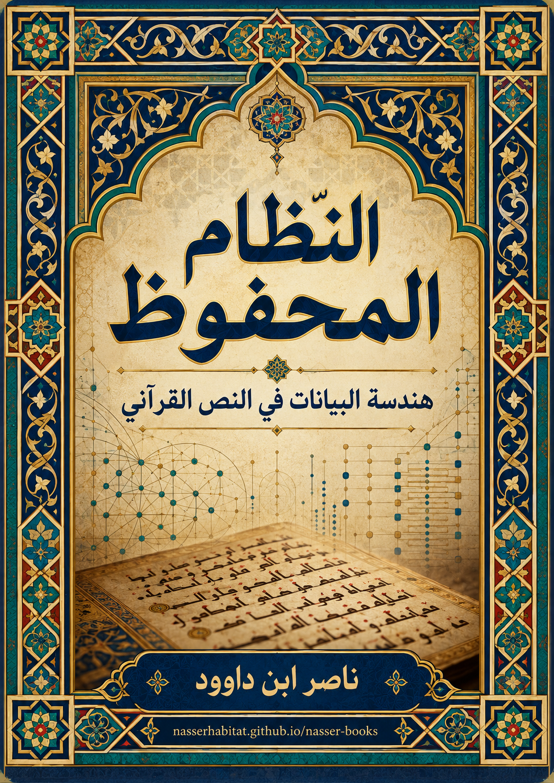

ناصر ابن داوود

نسخة نصية مستخرجة من ملف Word الذي قدمه المؤلف؛ راجع المصدر الأصلي.
جارٍ تجهيز القارئ…
النظام المحفوظ
هندسة البيانات في النص القرآني
المقدمة: التحول من "التفسير" إلى "نظام التشغيل" (QCROS)
المشكلة: أزمة التفسير الجزئي
تراكم الطبقات التأويلية
على مدار القرون الطويلة، تعرض النص القرآني لتراكم هائل من الطبقات التأويلية، والمرويات التاريخية، والإسقاطات الكلامية والمذهبية. هذا التراكم لم يكن مجرد إضافة إثرائية، بل تحول في كثير من الأحيان إلى "حجاب سميك" يفصل القارئ عن المبنى المباشر للنص. أصبح المتلقي اليوم لا يقرأ النص القرآني المجرد، بل يقرأ "تاريخ التأويلات البشرية" المحيطة به، مما أدى إلى غياب الرؤية النسقية الشاملة وتحويل الآيات إلى جزر مهملة منفصلة عن سياقها الهندسي الكلي.
افتراض "المعنى الثابت" للمفردة
تمسك المناهج التقليدية بافتراض أن المفردة القرآنية تحمل معنى أحادياً جامداً أو أنها تتقبل "الترادف الاعتباطي" مع مفردات أخرى (مثل المساواة المطلقة بين: الزوج والمرأة، أو الكتاب والقرآن، أو الخلق والأمر). هذا الاختزال العشوائي أفرغ الألفاظ من دلالاتها الإجرائية الدقيقة، وجعل النص يبدو متناقضاً أو حمال وجوه بلا ضوابط، مما فتح الباب أمام العشوائية التأويلية والفوضى الدلالية.
الفرضية المركزية: النص كنظام
يقترح نموذج (QCROS) فرضية مركزية تحول زاوية النظر بالكامل:
من "الكلمة" إلى "المتغير الإجرائي": المفردة القرآنية ليست مجرد وحدة لغوية معجمية، بل هي "متغير دقيق" له مدخلات، شروط تشغيل، وموقع بنيوي محدد داخل شبكة العلاقات النصية.
من "المعنى" إلى "الوظيفة": لا يسأل النظام: "ماذا تعني هذه الكلمة لغويّاً؟" فحسب، بل يسأل أولاً: "ما هي الوظيفة البنيوية والتشغيلية التي تؤديها هذه اللفظة داخل النسق الكلي للسورة والقرآن؟"
المنهج: QCROS
يعمل النظام وفق معايير منهجية صارمة تضمن سلامة الاستخراج المعرفي وعدم الوقوع في الانطباع الذاتي:
المبادئ المؤسسة:
PBM (النمط قبل المعنى): رصد الأنماط البنيوية وتكراراتها قبل إطلاق أي تأويل.
SOI (فصل الرصد عن التفسير): إثبات البيانات النصية الخام كما وردت قبل تحميلها بالآراء المسبقة.
CCC (اكتمال حصر مجال الاستعمال): شرط استقراء كافة مواضع ورود الجذر أو المفهوم في القرآن كاملاً دون اجتزاء.
MCT (اختبار الحد الأدنى من القيود): استبعاد أي فرضية تفسيرية زائدة عن الحاجة الهندسية للنص.
CRG (حوكمة رتبة الادعاء): لا تُرفع الملاحظة إلى نمط، ولا النمط إلى فرضية، ولا الفرضية إلى قانون، ولا النموذج إلى تعريف لغوي أو حقيقة أنطولوجية، إلا بقدر ما تسمح به الاختبارات المعلنة. وتُوسم النتائج عند الحاجة بحالات: ملاحظة / نمط / مرشح / OPEN / CLOSED / نموذج.
لغة النظام: يوظف النظام مصطلحات هيكلية مستمدة من علوم النظريات وتجهيز البيانات (مثل: قاعدة البيانات، المحرك الإجرائي، تنظيف البيانات، الضجيج، خط الأساس) بوصفها أدوات تقريب وتمثيل للعلاقات، لا بوصفها تعريفات حرفية للمصطلحات القرآنية. فنجاح الاستعارة في تفسير العلاقة لا يحولها تلقائياً إلى معنى معجمي للفظ.
بنية الكتاب: الثلاثية النظامية
تنتظم معمارية الطرح المعرفي في هذا الكتاب وفق ثلاثية محورية متكاملة تضبط مسار المعالجة:
البنية الكلية للنظام={الكتاب}_(⏟)_(قاعدة البيانات الثابتة)+{القرآن}_(⏟)_(المحرك الإجرائي التفاعلي)+{الذِّكْر}_(⏟)_(المخرج المعرفي المحفوظ)
{الكتاب}: يعمل في النموذج بوصفه طبقة المرجعية والضبط والميثاق الحاكم (Static Reference Layer).
{القرآن}: يعمل في النموذج بوصفه طبقة البيان والمعالجة التفاعلية القائمة على المقارنة والتصريف (Dynamic Processing Layer).
{الذِّكْر}: يُختبر في هذا الكتاب بوصفه مرشحاً لطبقة الاستحضار والهداية والمخرج المعرفي (Knowledge/Guidance Output)، مع بقاء تعريفه الجامع مفتوحاً للاختبار المقاوم.
إشكالية البيانات غير المهيكلة في التراث
أ. الفرق بين "البيانات" و"المعلومات" في التراث
التراث التفسيري والحديثي يزخر بكم هائل من "البيانات التاريخية والقصصية" (Raw Data)، غير أن التعامل معها غالباً ما تم خلطه باعتبارها "معلومات مقدسة وحاكمة" بنفس درجة النص القرآني. يفرق نظام QCROS بحدة بين النص القرآني المعصوم وبين المدونات البشرية التاريخية التي تحتاج إلى إعادة هيكلة وتدقيق.
ب. تنظيف البيانات لا إلغاؤها
لا يعني التعامل المنهجي مع التراث رميه في سلة المهملات، بل خضوعه لعملية "تنظيف بيانات صارمة" (Data Cleaning)؛ تُستبعد منها الإسرائيليات والروايات المقطوعة المتعارضة مع محكمات الكتاب، ويُستأنس بما يقدم إضاءة تاريخية منضبطة لا تصادم البنية الكلية للنص.
ج. مثال: "امرأة نوح" بين الرواية والهندسة النصية
حين يُرصد مفهوم الزوجية والمرأة في قصة نوح ولوط عليهما السلام، يبرز الفارق جلياً بين الاعتماد على الروايات الإسرائيلية والمرويات الضعيفة التي حاولت نسج قصص حول "خيانة الزوجة الفاحشة" (بالمعنى الجنسي)، وبين القراءة النسقية الإجرائية التي توضح أن "الخيانة" في سياق السنن الإلهية هي خيانة منهجية وعقدية وليست أخلاقية بمعناها الفردي الضيق، حيث خانتا المنهج وانحازتا لصف المعسكر المضاد للرسالة، وهو ما يثبته الفحص الهيكلي الشامل لمواضع اللفظ في القرآن.
المحتويات
1 المقدمة: التحول من "التفسير" إلى "نظام التشغيل" (QCROS) 1
1.1 المشكلة: أزمة التفسير الجزئي 1
1.2 الفرضية المركزية: النص كنظام 1
1.3 المنهج: QCROS 2
1.4 بنية الكتاب: الثلاثية النظامية 2